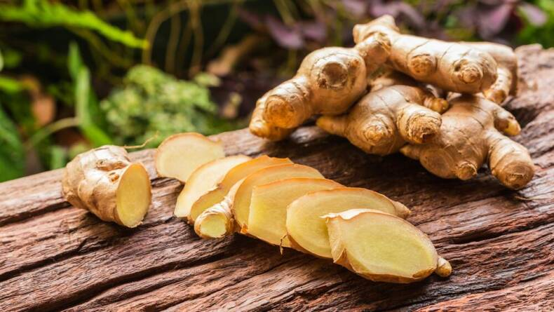

MANZANILLA | PROPIEDADES CALMANTES Y DIGESTIVAS
Fernando Fernández, Dic 1, 2022
La manzanilla es una planta versátil para cada necesidad. Ideal para infusiones que calman el estrés y mejoran la digestión. Aprende a usarla en recetas caseras. Esta hierba ha sido protagonista en la medicina natural por siglos...
Leer más

ALOE VERA | VALORES NUTRICIONALES Y USOS EN LA PIEL
Fernando Fernández, Sep 5, 2022
El aloe vera: propiedades hidratantes y curativas. Rico en vitaminas y minerales, perfecto para tratamientos cutáneos. Descubre sus beneficios y cómo cultivarlo en casa fácilmente...
Leer más

JENGIBRE | BENEFICIOS PARA LA INMUNIDAD Y DIGESTIÓN
Fernando Fernández, Ago 15, 2022
El jengibre potencia el sistema inmune y alivia molestias estomacales. Con alto contenido en antioxidantes, es un aliado natural. Inclúyelo en tus comidas diarias para un boost de salud...
Leer más

TÉ VERDE | ANTIOXIDANTES Y PROPIEDADES ENERGIZANTES
Fernando Fernández, Jul 20, 2022
El té verde es una fuente poderosa de antioxidantes que combate el envejecimiento. Ayuda en la concentración y quema grasa. Una bebida simple con grandes beneficios para la salud...
Leer más
CALENDULA | USOS EN CUIDADO DE LA PIEL Y HERIDAS
Fernando Fernández, Jun 10, 2022
La caléndula es antiinflamatoria y cicatrizante. Perfecta para cremas naturales y tratamientos de piel. Aprende a cosecharla y aplicarla en remedios caseros efectivos...
Leer más
Ver más entradas